FITR: From Articulated Object Images to Interactive 3D Assets for Real-World Manipulation
Overview
FITR augments image-generated articulated objects with physical scale, contact points, and joint dynamics. It uses these assets to generate simulation demonstrations and train vision-language-action policies for zero-shot real-world manipulation.
Read the abstract +
Collecting real-world training data for articulated object manipulation is costly, motivating scalable data generation in simulation. Recent advances in 3D asset generation have improved visual fidelity and geometric quality, but supporting robot interaction also requires appropriate physical dimensions, contact points and directions, and joint dynamics. To this end, we introduce FITR, a pipeline that constructs interactive 3D assets from images of articulated objects for policy learning in simulation and zero-shot deployment on real robots. We construct FITR-Assets by augmenting articulated assets with absolute scale, affordances, and calibrated joint drive parameters, and evaluate annotation quality on FITR-Bench. Using these assets, we combine motion planning with domain randomization to automatically collect approximately 60k manipulation demonstrations in Isaac Sim. Then, we fine-tune vision-language-action (VLA) policies via imitating the demonstrations and RL-driven simulated post-training, enabling zero-shot transfer to the real world. Through systematic ablation studies and comparative experiments in simulation and on real robots, we demonstrate that FITR enables zero-shot sim-to-real transfer for articulated object manipulation. We release FITR-Assets, the simulation demonstration dataset, policy checkpoints, and source code.
Method
FITR combines physical attribute augmentation, simulation data generation, and VLA policy training.
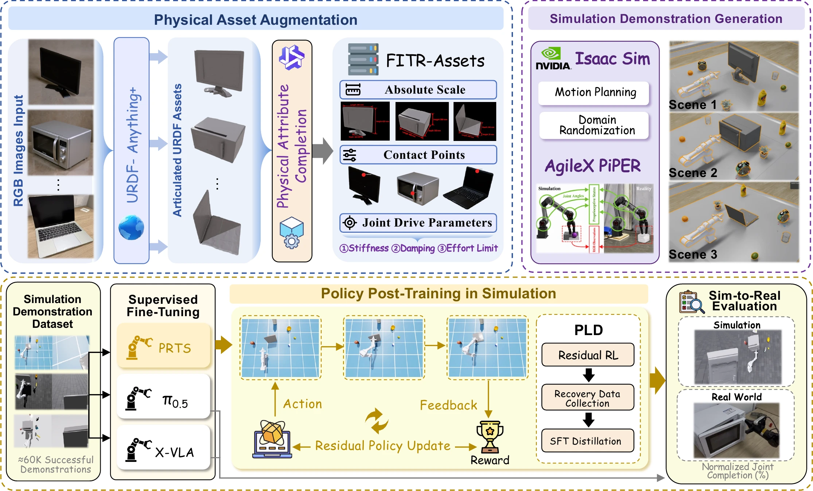
Project Video
Asset generation, simulation training, and real-world robot experiments.
Task demonstrations ↓- 01
Physical augmentation
Recover metric scale, derive geometry-based contacts, and calibrate equivalent joint drive parameters.
- 02
Demonstration generation
Combine articulated motion planning with scene and object randomization in Isaac Sim.
- 03
Policy training
Fine-tune VLA policies; distill successful residual-RL recovery trajectories into the deployed policy.
FITR-Assets
FITR-Assets augments 2,772 objects across 12 categories with metric dimensions, contact points and directions, and calibrated stiffness, damping, and effort limits. FITR-Bench contains 240 objects for attribute evaluation.
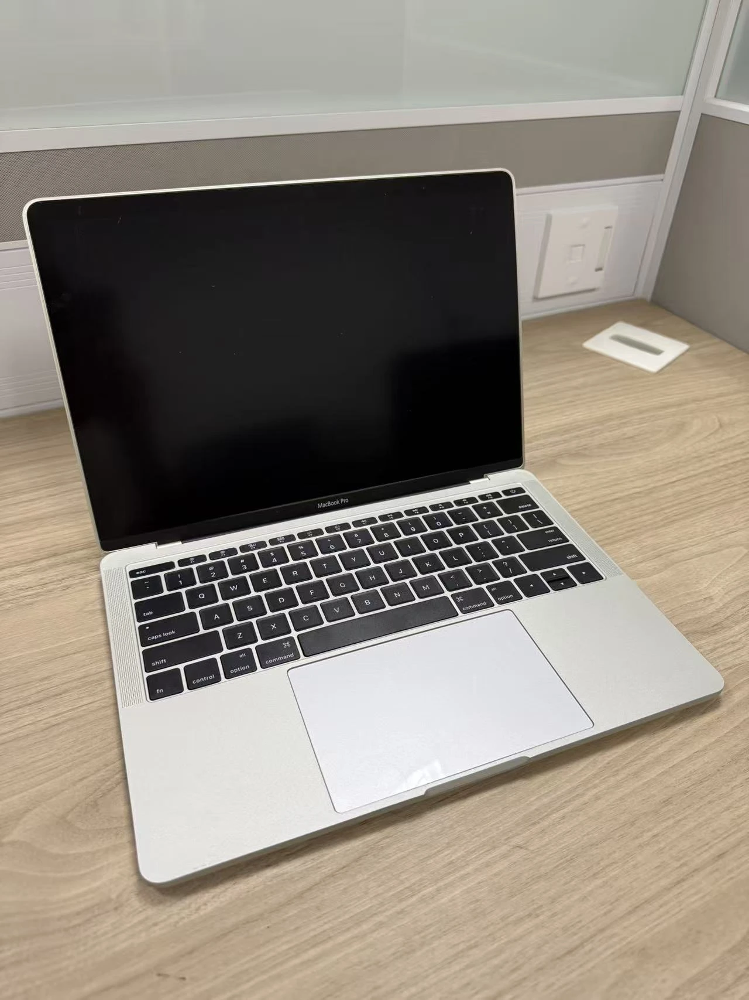
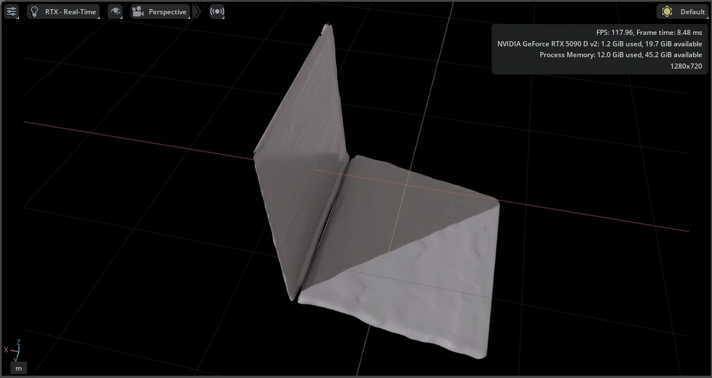
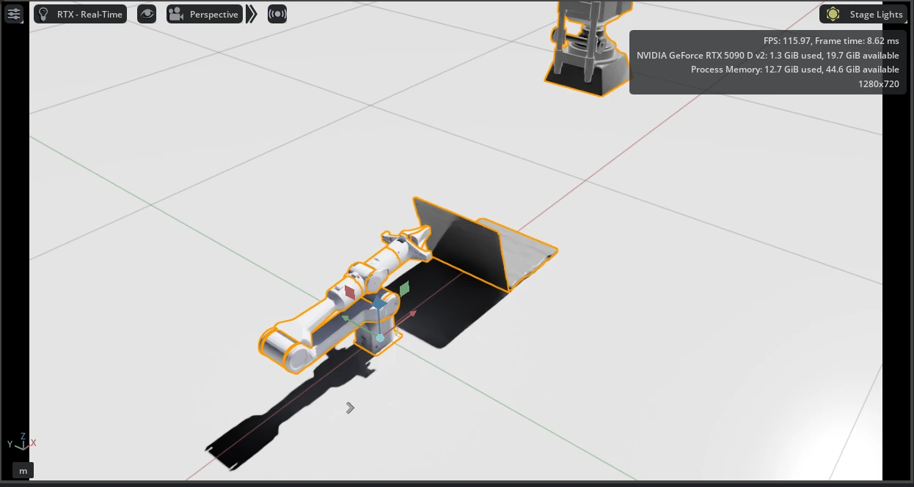
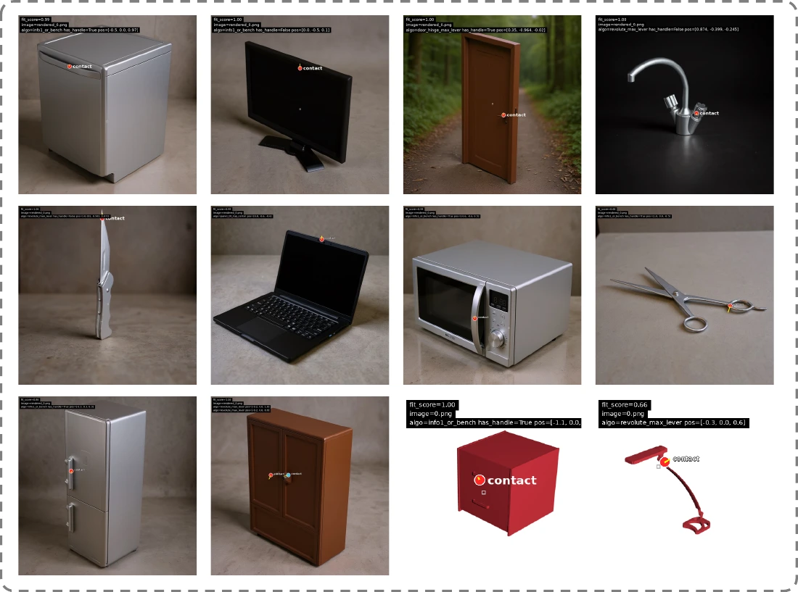
Simulation Demonstrations
Motion planning generates successful interactions with augmented assets. Randomized object poses, articulation states, lighting, backgrounds, cameras, and clutter broaden the training distribution. Approximately 10k demonstrations per task form a dataset of about 60k trajectories.
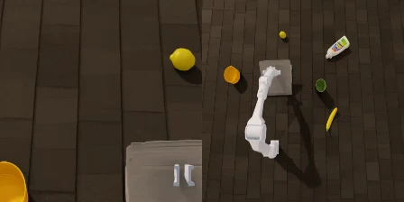
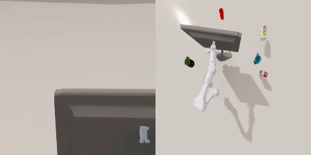
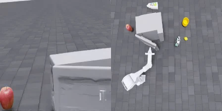
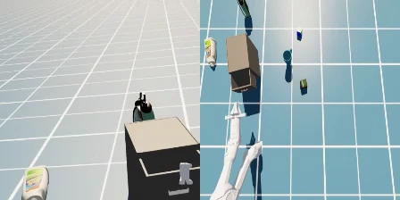
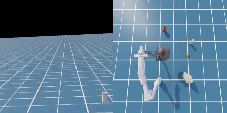
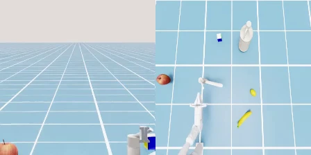
Sim-to-Real Evaluation
Policies trained in simulation are evaluated on six real-world articulated manipulation tasks, without real-world fine-tuning.
“Close the microwave door.”
STANDARD TASK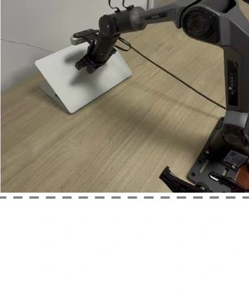
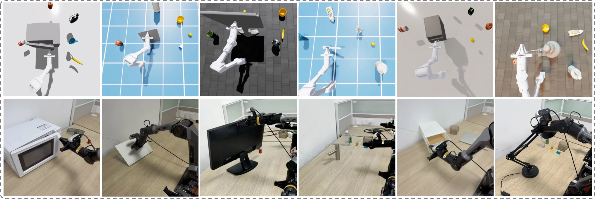
Experimental Results
We evaluate physical attribute completion on FITR-Bench and manipulation using Normalized Joint Completion (NJC). NJC measures how far the object joint moves toward its target; higher is better.
27.75%→7.93%
21.45 cm→1.48 cm
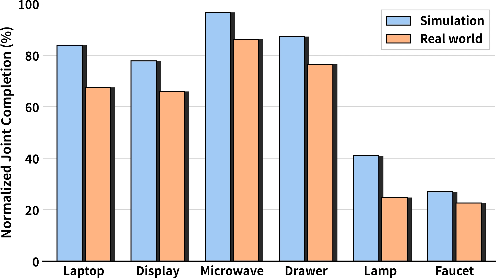
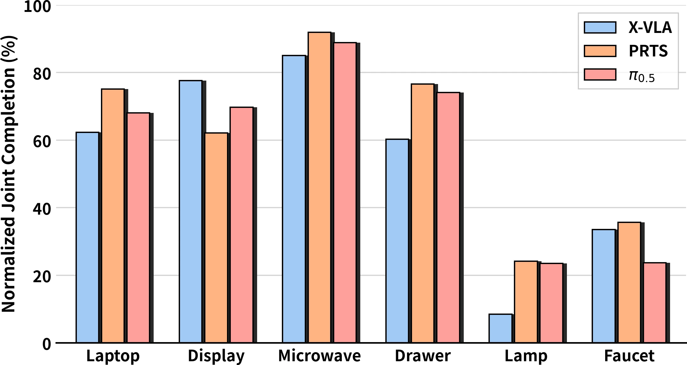
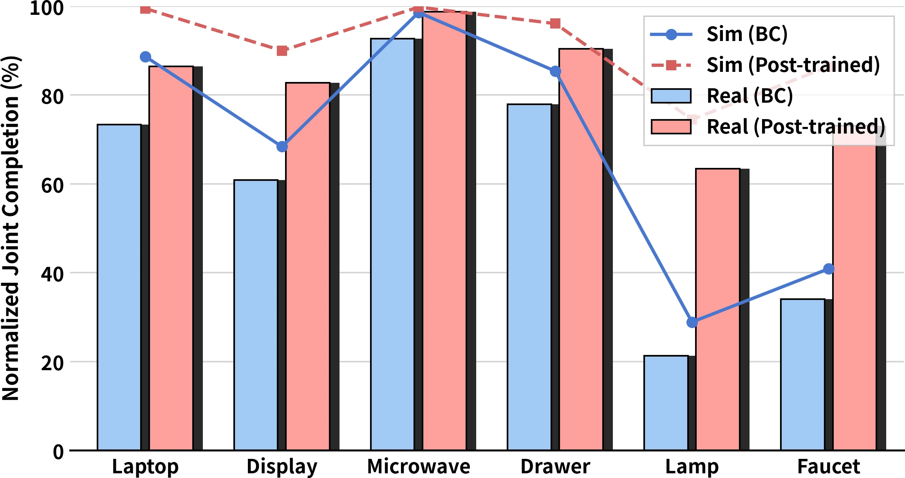
+22.45 percentage points
in real-world NJC
| Evaluation | Before | After |
|---|---|---|
| Simulation | 68.48 | 91.05 |
| Real world | 60.05 | 82.50 |
The robot runs the distilled VLA policy alone, with no real-world policy fine-tuning.
| Category | Scale · sMAPE (%) ↓ | Contact · MAE (cm) ↓ | Handle accuracy (%) ↑ | ||
|---|---|---|---|---|---|
| VLM | Ours | VLM | Ours | ||
| Laptop | 17.21 | 10.94 | 11.90 | 0.66 | — |
| Display | 10.13 | 6.45 | 15.89 | 0.84 | — |
| Microwave | 5.45 | 2.96 | 23.80 | 1.07 | 95.10 |
| Drawer | 57.80 | 18.10 | 5.01 | 0.94 | — |
| Lamp | 4.51 | 3.92 | 9.76 | 1.17 | — |
| Faucet | 29.98 | 10.81 | 5.43 | 0.48 | — |
| Knife | 9.43 | 9.13 | 4.54 | 0.33 | — |
| Dishwasher | 30.69 | 5.51 | 36.66 | 0.92 | 94.30 |
| Door | 65.63 | 2.05 | 74.48 | 5.54 | 97.50 |
| Refrigerator | 31.30 | 4.22 | 49.47 | 4.33 | 97.10 |
| Scissors | 18.66 | 8.87 | 7.64 | 0.31 | — |
| Storage cabinet | 52.19 | 12.16 | 12.82 | 1.21 | 93.80 |
| Mean | 27.75 | 7.93 | 21.45 | 1.48 | 95.56 |
Ours: VLM with scale references; geometry-derived contact points. Handle accuracy is averaged over the five reported categories; — indicates an unreported value.
| Environment | Randomization | Laptop | Display | Microwave | Drawer | Lamp | Faucet |
|---|---|---|---|---|---|---|---|
| Simulation | Full | 81.7 | 76.3 | 95.3 | 83.2 | 45.7 | 30.5 |
| Simulation | None | 40.6 | 21.9 | 22.7 | 15.4 | 6.8 | 8.9 |
| Real world | Full | 68.3 | 66.8 | 89.4 | 75.3 | 20.4 | 25.9 |
| Real world | None | 25.5 | 19.9 | 18.8 | 8.9 | 1.9 | 3.5 |
Full / None: full / no randomization. This comparison also changes dataset size (300 → approximately 10k demonstrations per task) and training budget (5k → 30k steps), so the gains reflect the combined changes.
Protocol: 50 simulation rollouts or 20 real-world trials per condition. Comparisons use separate evaluation trials. NJC measures joint completion, not binary success. Current real-world evaluation covers six single-object articulated tasks. Source: FITR manuscript, §4.
Resources
Paper
Method, experiments, and implementation details.
Code
Simulation collection, data conversion, and rollout scripts.
3D Assets
Articulated 3D objects with physical attributes. URDF / USD.
Trajectory Dataset
Robot demonstration episodes with observations and actions. HDF5.
Policy checkpoints
Trained policy checkpoints.